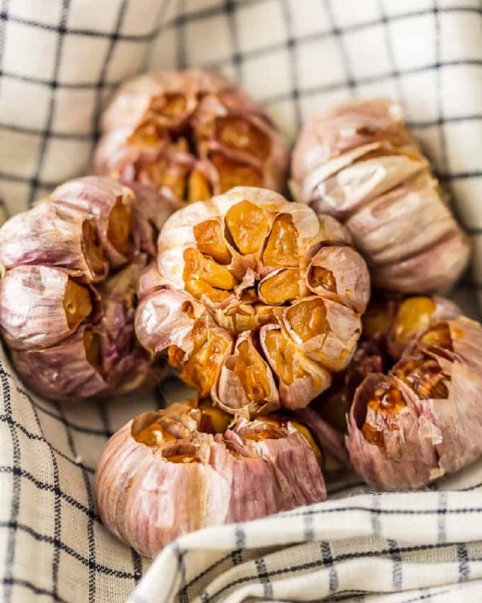
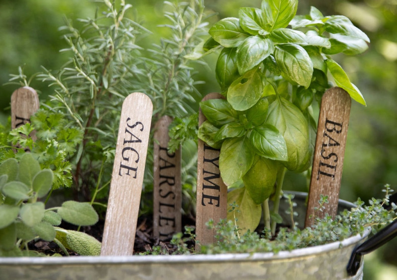
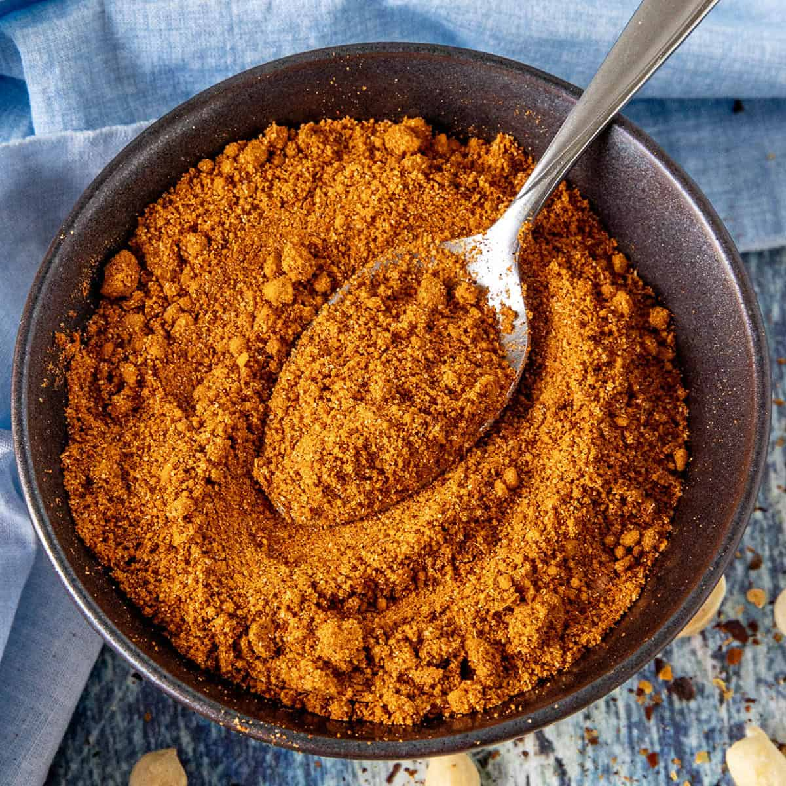

Garlic: depth and sweetness
Roasted garlic softens sharpness into something mellow, savory, and comforting. It often acts as the base note in a dish.
Garlic
Base flavor
A recipe-book style guide to building flavor through depth, brightness, warmth, and balance.

Roasted garlic softens sharpness into something mellow, savory, and comforting. It often acts as the base note in a dish.

Herbs brighten rich dishes and create a cleaner finish. They help balance heavier flavors.

Spice blends bring identity to a dish, whether that means smoky warmth, bold aroma, or a stronger heat level.
Citrus adds acidity, aroma, and energy. A final squeeze or zest can sharpen and lighten the entire flavor profile.
Browse the recipe list and choose your seasoning profile.